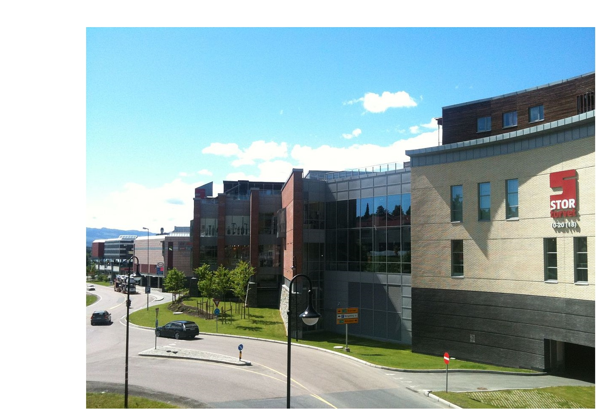

Stortorvet
In kongsberg there is one main mall. Stortorvet has a very wide collection of shops from food shops to clothes to jewlery stores. Stortorvet is located in the centre of kongsberg and is impossible to miss. Find opening times on their website or in their app.
Sølvparken
Sølvparken is another Mall which is located in kongsberg sentrum. While not quite as big as Stortovet it boasts an impressive 6 shops ranging from food shops to electronics stores. Sølvparken and stortorvet are actually connected by a bridge spanning the road which separates them, however they are infact 2 different malls. For more information about sølvparken check out the website.
